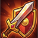
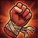
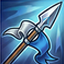
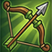
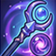
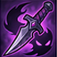
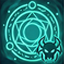
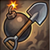
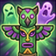
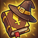

📚 게임 가이드
Deadline 15 완벽 공략
🎮 게임 기본
Deadline 15는 턴 기반 전략 RPG입니다. 클랜원들을 모집하고 훈련시켜 10개 스테이지의 도전을 이겨내세요.
📍 핵심 시스템
🛡️ 파티 구성
로비에서 "파티"로 이동하여 최대 5명의 클랜원을 선택합니다. 균형 잡힌 조합이 필수입니다.
💪 레벨업 & 성장
전투에서 경험치를 얻어 클랜원을 강화하세요. 최대 레벨 15까지 성장 가능합니다.
🎯 전직 (아카데미)
노비스만 다른 직업으로 전직 가능합니다. 아카데미에서 전직서를 사용하세요. 레벨, 경험치, 잠재력 등급은 유지됩니다.
📊 자원 시스템
분노(Fury, MAX 10): 전사/기사/창술사 - 공격 시 +1, 피격 시 +2 충전. MAX 도달 시 패시브 자동 발동 후 0으로 리셋.
에너지(Energy, MAX 100): 암살자/궁수/공병 - 매턴 자동 회복. 스킬 사용 시 소비.
마나(Mana, MAX 100-120): 마법사/성직자/소환사/샤먼 - 매턴 자동 회복. 마법/힐 스킬 사용 시 소비.
에너지(Energy, MAX 100): 암살자/궁수/공병 - 매턴 자동 회복. 스킬 사용 시 소비.
마나(Mana, MAX 100-120): 마법사/성직자/소환사/샤먼 - 매턴 자동 회복. 마법/힐 스킬 사용 시 소비.
⚔️ 반격 시스템
적에게 공격당해도 사거리 내라면 자동으로 반격합니다. 스턴/빙결 상태에서는 반격 불가.
🏆 초기 클리어 보상
스테이지를 처음 클리어하면 +1000G 보너스와 랜덤 클래스 캐릭터 1명을 획득합니다.
💡 초보자 팁
🌟 적절한 난이도 선택
처음에는 낮은 스테이지부터 시작하세요. 클랜원들이 충분히 강해지면 더 어려운 스테이지도 정복할 수 있습니다.
🌟 균형잡힌 조합
근접 딜러, 원거리 딜러, 방어/지원 캐릭터를 적절히 섞어서 팀을 구성하세요.
🌟 전투 포션 챙기기
전투 전 상점에서 회복/자원/버프 포션을 구매하여 전투에 가져가세요. 위기 상황에서 포션이 생존을 결정합니다.
⚔️ 근접 딜러 (Melee)

Warrior
⚡ 강타 (ATK×1.5)
🔥 광폭 패시브
강점: 순간 딜량이 높음. 분노 MAX 시 광폭 발동(ATK×1.5).
약점: 방어력이 보통. 집중 공격에 약합니다.
Knight
🔄 스위치
🛡️ 최고 탱커
강점: 높은 HP와 방어력. 스위치로 위치 교환. 희생/고통분담으로 아군 보호.
약점: 낮은 공격력과 이동력. 서포터 역할에 적합합니다.

Brawler
🤛 무장해제
🔁 역습 패시브
강점: 높은 공격력. 무장해제로 적 ATK 50% 감소. 역습 패시브로 반격.
약점: 방어력이 낮음. 원거리 공격 불가.

Lancer
🔱 관통 (3칸)
🏰 철벽
강점: 관통으로 일직선 3칸 공격. 방진으로 아군 DEF 버프. 분노 MAX 시 2턴간 방어력 2배(철벽).
약점: 낮은 공격력. 수비 위주 플레이 필요.
🏹 원거리 딜러 (Ranged)

Archer
💨 도약
🏹 사거리 4
강점: 먼 거리 공격. 도약으로 신속한 이동.
약점: 매우 낮은 방어력. 위치 선정이 중요합니다.

Mage
🔥 화염폭발 (3×3)
🔮 AoE
강점: 화염폭발로 3×3 범위 공격. 많은 적 일소 가능.
약점: 낮은 방어력. 거리 유지 필수.

Assassin
💀 암살 (ATK×5)
🌿 은신
강점: 최고 공격력. 숲에서 자동 은신. 은신+겹침 시 ATK×5 암살.
약점: 낮은 방어력. 은신 해제 시 위험. 습격도 은신 상태에서만 사용 가능.

Summoner
✨ 정령소환
🗿 골램소환
강점: 소환수로 전장 제어. 영혼 폭발로 AoE 딜.
약점: 소환수 1체 제한. 소환수 사망 시 전력 하락.
✝️ 지원 & 특수 (Support)
Priest
✨ 집단 치유 (6칸)
💚 회복
강점: 집단 치유로 범위 회복. 파티 생존율 증가.
약점: 낮은 공격력. 방어 필수.

Sapper
⚠️ 함정 (ATK×2)
⛏️ 굴착
강점: 함정으로 적 제어. 굴착으로 바위 파괴. 폭파로 원격 기폭.
약점: 함정 위치 선정이 핵심. 에너지 관리 필요.

Shaman
☠️ 쇠약의 저주
🔺 고양
강점: 저주로 적 매턴 피해+이동불가. 고양으로 아군 전체 25% 딜 증가.
약점: 채널링 중 이동/행동 불가. 보호 필수.

Novice
🪨 돌던지기
📈 전직 가능
강점: 높은 성장률. 아카데미에서 11개 직업으로 전직 가능.
약점: 기본 능력은 평균 이하. 빠른 전직 권장.
🏰 공성 아이템
🪜 사다리 (100G)
인접한 벽/바위 너머로 이동합니다. 사용 후 추가 행동 가능. 이동 불가 지형을 우회하는 핵심 아이템.
💣 폭탄 (200G)
3칸 내 벽/바위를 파괴하여 평지로 만듭니다. 성벽이나 바위 장애물을 영구적으로 제거.
🌉 다리 (150G)
3칸 내 물 타일을 평지로 변환합니다. 물로 막힌 경로를 개척할 때 유용.
🌟 적 AI도 공성아이템 사용
적 유닛도 폭탄, 방어막, 회피, 우회로 등 공성아이템을 보유합니다. 이동 불가 시 무조건 사용하므로 주의하세요.
🧪 전투 포션
💊 회복 포션
HP 50% 회복. 자신 또는 인접 아군에게 사용 가능. 행동 1회 소비.
⚡ 자원 포션
자원(에너지/마나/분노) 30 회복. 스킬 사용이 급할 때 유용.
🔥 공격력 버프 포션
ATK +30%, 3턴 지속. 보스전이나 결정적 순간에 사용.
🏫 아카데미
📜 전직 시스템
노비스만 전직 가능합니다. 전직서 종류:
• 근접 전직서 (150G): 전사/기사/도적/격투가/창병/공병
• 원거리 전직서 (150G): 궁수/마법사/소환사/주술사
• 힐러 전직서 (120G): 사제
• 범용 전직서 (200G): 모든 11개 직업
• 근접 전직서 (150G): 전사/기사/도적/격투가/창병/공병
• 원거리 전직서 (150G): 궁수/마법사/소환사/주술사
• 힐러 전직서 (120G): 사제
• 범용 전직서 (200G): 모든 11개 직업
📕 스킬북
스킬북으로 습득형 스킬을 배울 수 있습니다. 전투 클리어 시 5% 확률로 드롭되거나 상점에서 구매 가능.
⚒️ 장비 & 강화
🗡️ 장비 시스템
파티 메뉴의 "장비" 탭에서 무기/방어구를 장착합니다. 각 장비는 이모지로 표시되며 스탯 보너스를 제공합니다:
• 무기: 🗡️ 기사검, 🔪 단검, 🔨 메이스, ✨ 지팡이, 👊 권투장갑, ⚔️ 대검, 🏹 활, 🪄 마법봉, 🗣️ 창
• 방어구: 🛡️ 방패, 📖 마법서, 🎯 작은방패 (방어구), ⚡ 투구, 👒 모자, 🧢 두건, 🏰 갑옷, 🧵 가죽갑옷, 👗 로브, 👢 부츠, 🥾 가죽부츠, 👟 신발
• 악세서리: 💎 목걸이(힘), 🔗 목걸이(방어), 🌪️ 목걸이(민첩), 💫 귀걸이(힘), ⭐ 귀걸이(방어), 🔷 반지(방어) 등
• 무기: 🗡️ 기사검, 🔪 단검, 🔨 메이스, ✨ 지팡이, 👊 권투장갑, ⚔️ 대검, 🏹 활, 🪄 마법봉, 🗣️ 창
• 방어구: 🛡️ 방패, 📖 마법서, 🎯 작은방패 (방어구), ⚡ 투구, 👒 모자, 🧢 두건, 🏰 갑옷, 🧵 가죽갑옷, 👗 로브, 👢 부츠, 🥾 가죽부츠, 👟 신발
• 악세서리: 💎 목걸이(힘), 🔗 목걸이(방어), 🌪️ 목걸이(민첩), 💫 귀걸이(힘), ⭐ 귀걸이(방어), 🔷 반지(방어) 등
⬆️ 강화 시스템
파티 메뉴의 "강화" 탭에서 장비를 강화합니다.
• 같은 슬롯의 다른 장비를 재료로 사용
• 강화 실패 시 레벨 유지 (downgrade 없음)
• 일정 횟수 실패 시 보장 강화 (Pity 시스템)
• 최대 +10까지 강화 가능
• 같은 슬롯의 다른 장비를 재료로 사용
• 강화 실패 시 레벨 유지 (downgrade 없음)
• 일정 횟수 실패 시 보장 강화 (Pity 시스템)
• 최대 +10까지 강화 가능
⛪ 성소
💀 부활
전투에서 사망한 클랜원을 골드로 부활시킵니다. 광고 시청으로 무료 부활도 가능합니다.
⬆️ 승격
클랜원의 잠재력 등급을 올립니다. C → B → A → S 순서로 승격.
🗺️ 지형 효과
🌿 숲 (Forest)
암살자가 자동으로 은신합니다. 적 AI가 은신 유닛을 감지하지 못합니다.
⛰️ 언덕 (Hill)
높은 지형에서 공격 시 이점을 얻습니다.
🪨 바위 (Rock)
이동 불가. 폭탄이나 사다리로 극복 가능. 공병의 굴착으로 파괴 가능.
🌊 물 (Water)
이동 불가. 다리 아이템으로 평지로 변환 가능.
🧱 성벽 (Wall/Gate)
방어 스테이지에서 적 진입을 막습니다. HP가 있으며 공격으로 파괴 가능.
⚔️ 기본 전술
📍 포지셔닝
• 근접 캐릭터는 앞줄에 배치
• 원거리 딜러는 뒷줄에 배치
• 지원 캐릭터는 중앙에 배치
• 맵 구조를 활용하여 유리한 위치 확보
• 원거리 딜러는 뒷줄에 배치
• 지원 캐릭터는 중앙에 배치
• 맵 구조를 활용하여 유리한 위치 확보
🎯 타겟 우선순위
• 1순위: 적 원거리 딜러 (위험도 높음)
• 2순위: 적 회복사 (지속력 높음)
• 3순위: 일반 적
• 마지막: 적 탱커 (위협도 낮음)
• 2순위: 적 회복사 (지속력 높음)
• 3순위: 일반 적
• 마지막: 적 탱커 (위협도 낮음)
💪 스킬 활용
• 초반: 자원 모으기 (자동 회복)
• 중반: 중요 스킬 사용 (주요 적 처리)
• 종반: 마지막 스킬로 정리
• 회복이 필요하면 즉시 사용
• 중반: 중요 스킬 사용 (주요 적 처리)
• 종반: 마지막 스킬로 정리
• 회복이 필요하면 즉시 사용
🔄 반격 활용
• 사거리 내 적에게 공격당하면 자동 반격
• 격투가의 역습(30% 확률 피해 무효+반격) 패시브 적극 활용
• 스턴/빙결 상태에서는 반격 불가하므로 주의
• 격투가의 역습(30% 확률 피해 무효+반격) 패시브 적극 활용
• 스턴/빙결 상태에서는 반격 불가하므로 주의
🔥 상황별 전술
🏹 원거리 적이 많을 때
맨 앞에 기사를 배치하여 적 공격을 흡수합니다. 기사의 포획으로 적 딜러를 끌어오거나, 희생으로 아군을 보호하세요.
🔥 광역 공격이 많을 때
유닛들을 분산시켜 배치하여 광역 피해를 최소화합니다. 마법사의 화염폭발, 주술사의 독안개 범위를 피하세요.
💀 보스 전투
보스는 일반 적보다 훨씬 강합니다. 주술사 저주로 지속 피해를 주고, 기사 탱킹 + 딜러 집중 공격으로 처리하세요. 포션을 아끼지 마세요.
🧱 방어 스테이지
성벽 뒤에서 원거리 공격으로 적을 처리합니다. 성벽이 파괴되면 폭탄/사다리로 대응하는 적에 주의. 적 돌파 수가 한계를 넘으면 패배합니다.
📊 리소스 관리
⚡ Fury (분노) — Warrior, Knight, Lancer
• 공격 시 +1, 피격 시 +2 충전
• MAX 도달 시 강력한 패시브 발동 (전사: 광폭)
• 적극적인 전투로 빠르게 충전
• MAX 도달 시 강력한 패시브 발동 (전사: 광폭)
• 적극적인 전투로 빠르게 충전
⚡ Energy (에너지) — Archer, Assassin, Brawler, Sapper, Novice
• 매턴 자동 회복 (8~15)
• 스킬 사용으로 소모 (20~100)
• 자원 포션으로 긴급 충전 가능
• 스킬 사용으로 소모 (20~100)
• 자원 포션으로 긴급 충전 가능
💜 Mana (마나) — Mage, Priest, Summoner, Shaman
• 매턴 자동 회복 (10~12)
• 마법/회복/소환 스킬에 사용
• 마법사: 마나 80% 이상 시 데미지 20% 증가 (마나 쇄도 패시브)
• 마법/회복/소환 스킬에 사용
• 마법사: 마나 80% 이상 시 데미지 20% 증가 (마나 쇄도 패시브)
💡 고급 팁
🌟 팀 구성 예시
균형 파티: Knight + Archer + Mage + Priest + Warrior
공격 파티: Warrior + Brawler + Assassin + Archer + Mage
방어 파티: Knight + Lancer + Priest + Shaman + Sapper
상황에 따라 조합을 변경하세요.
공격 파티: Warrior + Brawler + Assassin + Archer + Mage
방어 파티: Knight + Lancer + Priest + Shaman + Sapper
상황에 따라 조합을 변경하세요.
🌟 골드 관리
초반에는 경험치 물약보다 강한 캐릭터 모집을 우선하세요. 초기 클리어 보너스(+1000G)를 활용하여 장비와 전직서에 투자하세요.
🌟 전직 전략
노비스를 초반에 전직시키면 빠르게 스킬을 사용할 수 있습니다. 잠재력 등급(S/A/B/C)은 전직 후에도 유지됩니다.
🌟 암살자 운용
숲 타일을 적극 활용하세요. 은신 상태에서만 습격과 암살을 사용할 수 있습니다. 숲→숲 이동으로 은신을 유지하며 적 후방을 기습하세요.